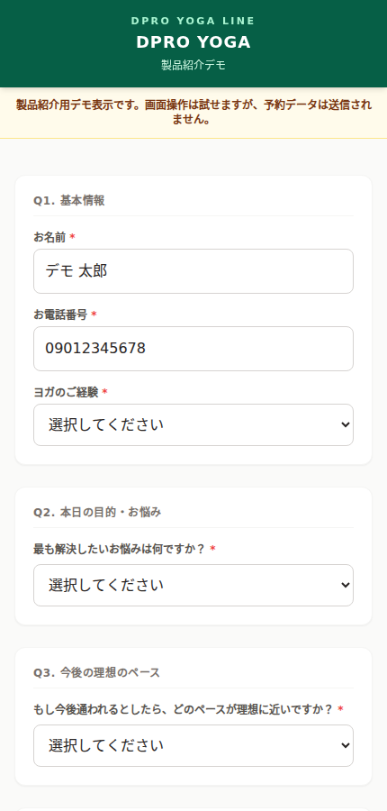
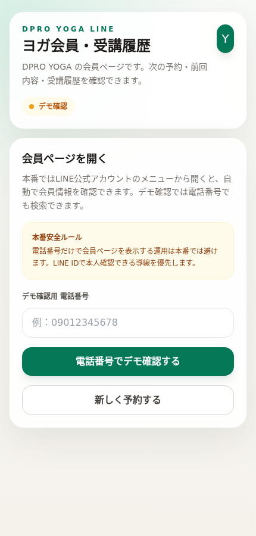
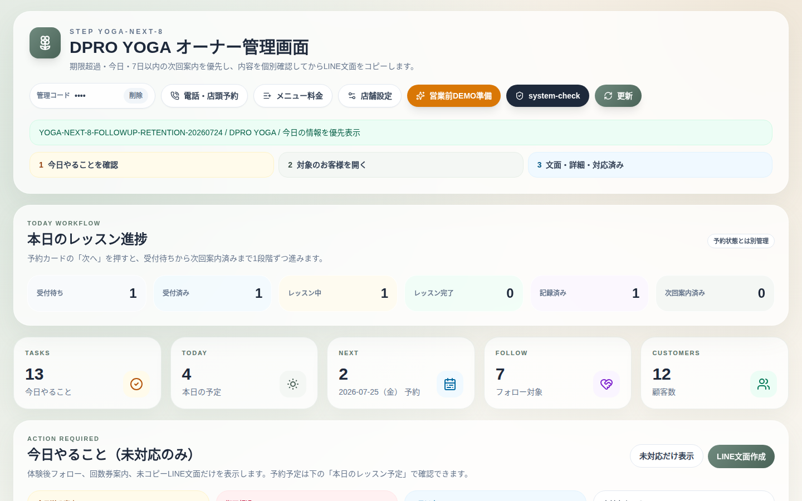
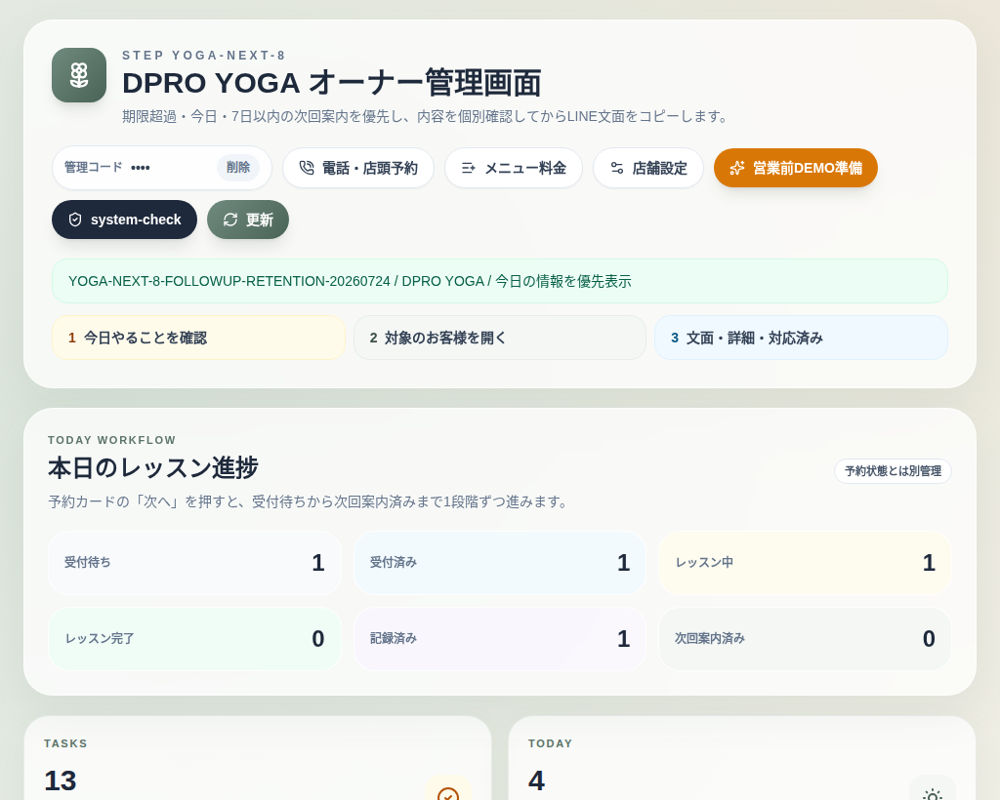

DPRO NEXT / PRIVATE YOGA LINE SYSTEM
DPRO YOGA LINE
予約・今日やること・進捗・受講履歴・前回と同じ予約・次回案内を、LINEとPC・iPadで一つにつなぐプライベートヨガ専用システム。
公開確認済み / NEXT COMPLETE
1お客様画面体験・通常予約
2LINE会員履歴・前回と同じ予約
3オーナーPC今日やること
4店舗iPad進捗・受講記録
5次回案内個別確認して送信
LIVE SCREENお客様予約画面

LIVE SCREENLINE会員ページ

LIVE SCREENオーナーPC管理画面

LIVE SCREEN店舗iPad・スタッフ画面
